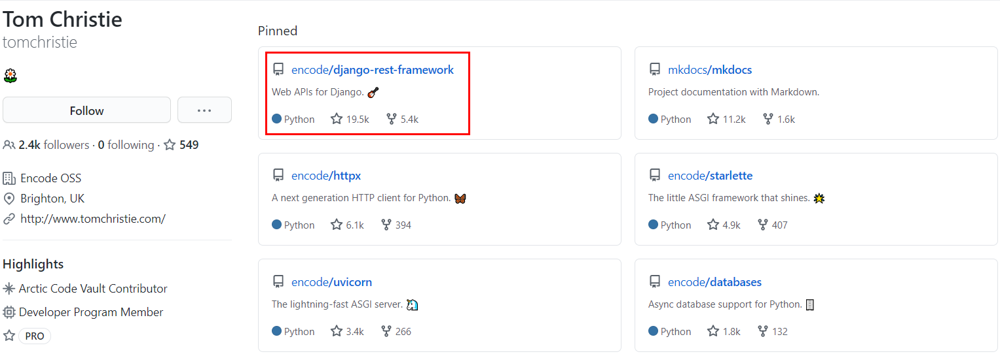
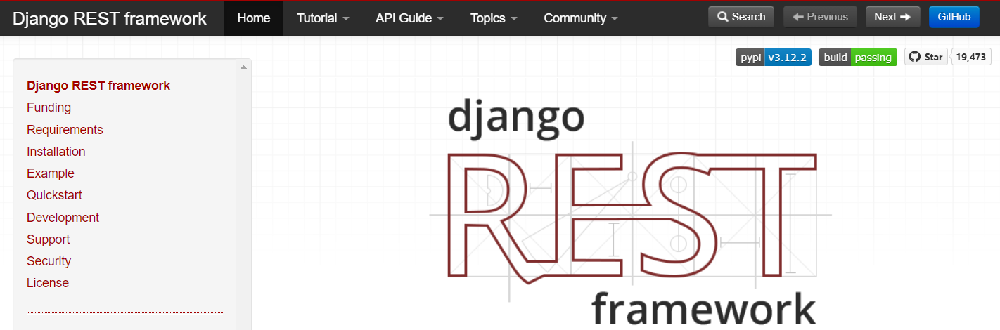
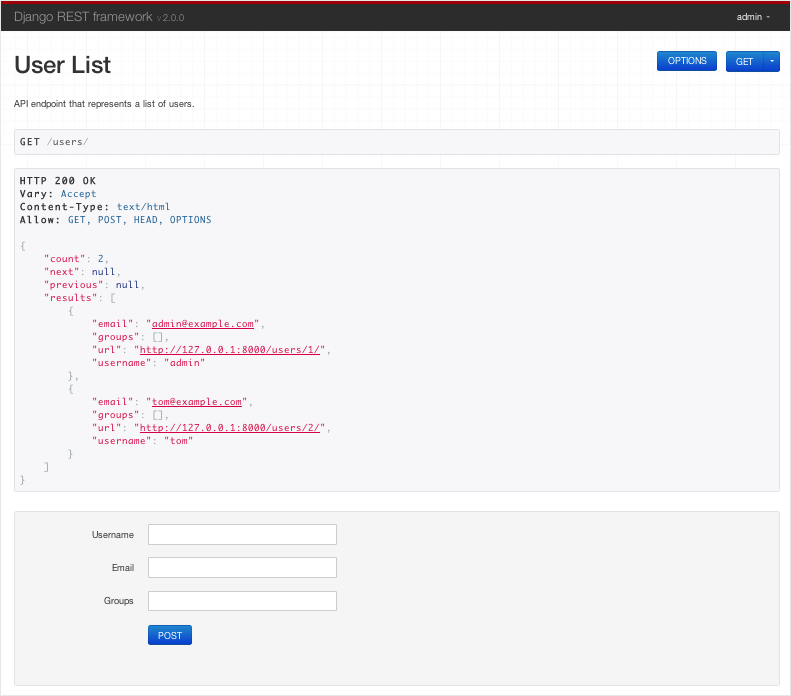

Django 默认是前后端绑定的，提供了 Template 和 Form，现在流行前后端分离项目，Python 大佬坐不住了，于是便有了 Django REST framework：https://github.com/tomchristie

官网：https://www.django-rest-framework.org/

Django REST framework（简称 DRF）是个 Python 技术栈的后端框架，用来构建 RESTful API。
RESTful API
REST，是指 REpresentational State Transfer，有个精辟的解释什么是 RESTful：
- 看 URL 就知道要什么
- 看 Method 就知道干什么
- 看 Status Code 就知道结果如何
良好的 RESTful API 设计的基本原则是：
- 返回 JSON
- 严禁乱用状态码
- 处理好分页
- 返回具体的实体数据而不是返回通用的 JSON 数据
- 请求对象有默认值
创建项目
接下来我们使用 DRF 创建一个简单的 API，允许管理员查看和编辑用户和组。
先创建名为tutorial的 project 和名为quickstart的 app：
# 创建项目目录
mkdir tutorial
cd tutorial
# 创建Python虚拟环境
python -m venv env
# 激活虚拟环境
env\Scripts\activate.bat
# Mac中使用`source env/bin/activate`
# 在虚拟环境中安装Django和Django REST framework
pip install django
pip install djangorestframework
# 创建project，注意最后有个“.”，表示在当前目录创建
django-admin startproject tutorial .
cd tutorial
# 创建app
django-admin startapp quickstart
cd ..
创建好的目录结构如下：
$ pwd
<some path>/tutorial
$ find .
.
./manage.py
./tutorial
./tutorial/__init__.py
./tutorial/quickstart
./tutorial/quickstart/__init__.py
./tutorial/quickstart/admin.py
./tutorial/quickstart/apps.py
./tutorial/quickstart/migrations
./tutorial/quickstart/migrations/__init__.py
./tutorial/quickstart/models.py
./tutorial/quickstart/tests.py
./tutorial/quickstart/views.py
./tutorial/settings.py
./tutorial/urls.py
./tutorial/wsgi.py
一般不会把 app 放到 project 里面，这里是为了避免命名冲突。
接着同步数据库：
python manage.py migrate
然后创建一个超级管理员，密码password123：
python manage.py createsuperuser --email admin@example.com --username admin
Serializers
序列化是指把数据库模型转换为 JSON。新建模块tutorial/quickstart/serializers.py：
from django.contrib.auth.models import User, Group
from rest_framework import serializers
class UserSerializer(serializers.HyperlinkedModelSerializer):
class Meta:
model = User
fields = ['url', 'username', 'email', 'groups']
class GroupSerializer(serializers.HyperlinkedModelSerializer):
class Meta:
model = Group
fields = ['url', 'name']
Views
视图用来接受 Web 请求并且返回 Web 响应。打开tutorial/quickstart/views.py，添加代码：
from django.contrib.auth.models import User, Group
from rest_framework import viewsets
from rest_framework import permissions
from tutorial.quickstart.serializers import UserSerializer, GroupSerializer
class UserViewSet(viewsets.ModelViewSet):
"""
API endpoint that allows users to be viewed or edited.
"""
queryset = User.objects.all().order_by('-date_joined')
serializer_class = UserSerializer
permission_classes = [permissions.IsAuthenticated]
class GroupViewSet(viewsets.ModelViewSet):
"""
API endpoint that allows groups to be viewed or edited.
"""
queryset = Group.objects.all()
serializer_class = GroupSerializer
permission_classes = [permissions.IsAuthenticated]
URLs
配置路由，打开tutorial/urls.py，添加代码：
from django.urls import include, path
from rest_framework import routers
from tutorial.quickstart import views
router = routers.DefaultRouter()
router.register(r'users', views.UserViewSet)
router.register(r'groups', views.GroupViewSet)
# Wire up our API using automatic URL routing.
# Additionally, we include login URLs for the browsable API.
urlpatterns = [
path('', include(router.urls)),
path('api-auth/', include('rest_framework.urls', namespace='rest_framework'))
]
因为这里用的不是 view 而是 viewsets，所以可以自动生成 API 的 URLconf，只需要注册 class 即可。
也可以不用 viewsets，用 view，再自定义 API URL。
Pagination
分页用来控制每页返回多少数据，在tutorial/settings.py中添加：
REST_FRAMEWORK = {
'DEFAULT_PAGINATION_CLASS': 'rest_framework.pagination.PageNumberPagination',
'PAGE_SIZE': 10
}
Settings
在tutorial/settings.py中，把'rest_framework'添加到INSTALLED_APPS：
INSTALLED_APPS = [
...
'rest_framework',
]
测试 API
启动项目：
python manage.py runserver
访问http://127.0.0.1:8000/users/，点击右上角用超管登录，即可看到：

小结
本文是 Django REST framework 系列的开篇，内容参考的是官网的 Tutorial。学了 Django 再看 DRF，思路清晰多了，虽然我代码能力不强，但总是在追求规范和标准，难道是因为做测试的职业病么？
参考资料：